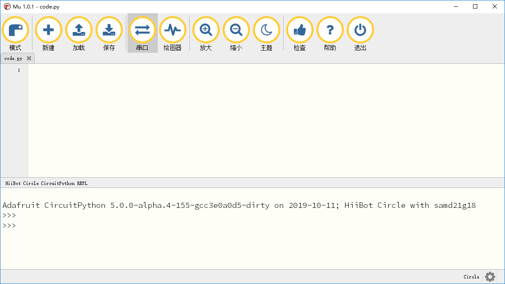

7. REPL¶
REPL（Read-Evaluate-Print-Loop） — 交互式解释器环境。 输入值，交互式解释器会读取输入内容并对它求值，再返回结果，并重复此过程。
REPL可以立即执行当前输入的代码，可以实时的运行并输出结果。通常REPL交互方式可以用于调试、测试以及试验某种想法。
Mu中的串口窗口可以连接上编程圆的REPL环境，由于编程圆中当前运行的while循环会造成阻塞并影响Mu串口连接编程圆的REPL环境， 所以需要先将编程圆上的while循环语句去除。可以加载“code.py”文件，删除所有代码并保存。
输入打印代码并回车，将会直接输出打印信息。
>>> print("Hello, world!")
Hello, world!
我们输入设置亮灯的程序，编程圆上红灯保持着常量状态。
>>> import board
>>> import digitalio
>>> import time
>>> led = digitalio.DigitalInOut(board.D13)
>>> led.direction = digitalio.Direction.OUTPUT
>>> led.value = True
将led.value设置为False，编程圆上的红灯将熄灭
>>> led.value = False